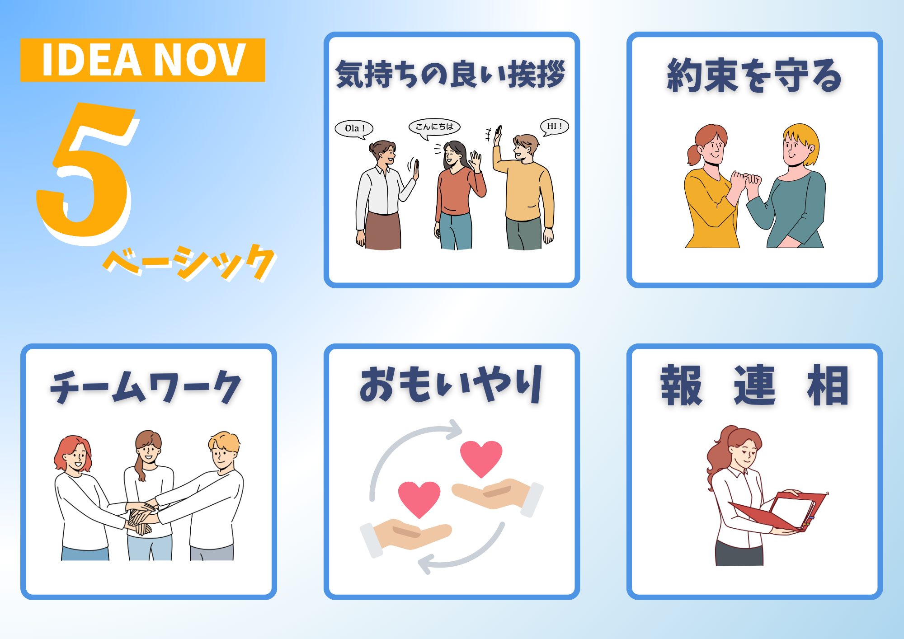
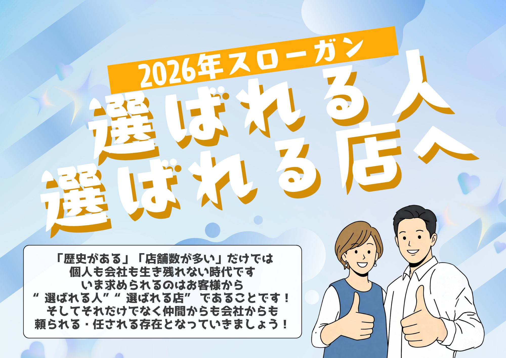

Survey
360度アンケート関連
挨拶、約束、チームワーク、思いやり、報連相を周囲から見える行動として確認します。
- 回答状況準備中
- フィードバック準備中
- 改善アクション準備中
BASSA Management
Culture App
IDEA NOVベーシックと今年のスローガンを確認し、360度アンケートとマネジメントチェックにつなげます。


Survey
挨拶、約束、チームワーク、思いやり、報連相を周囲から見える行動として確認します。
Management
店長としての確認、面談、チーム運営、約束の実行を定期的に見直します。